Health tourism in Asia started c. 2500 BCE in the Indus Valley (today Pakistan & India), then spread to China, Japan, Korea and Thailand.
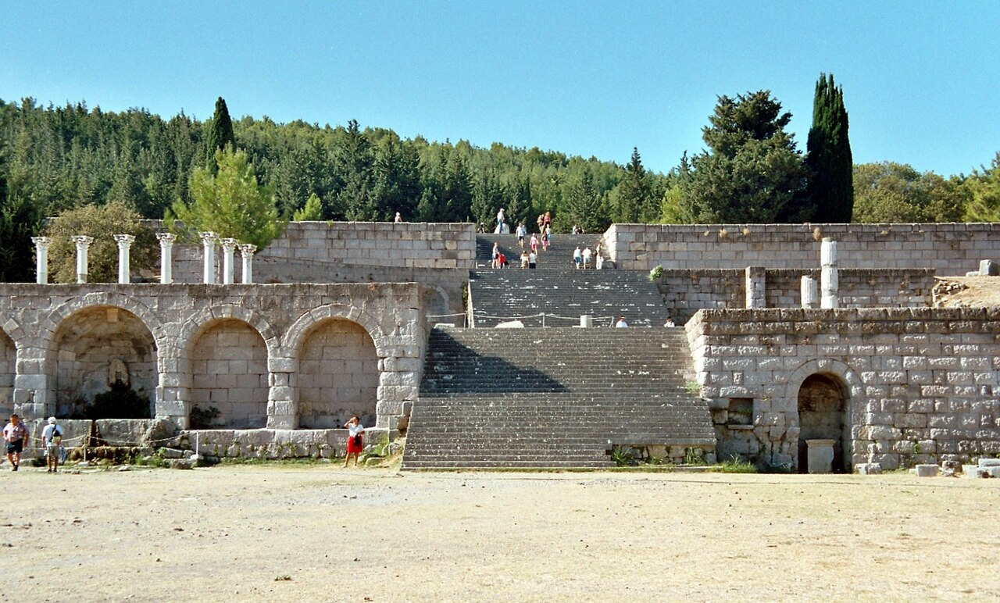
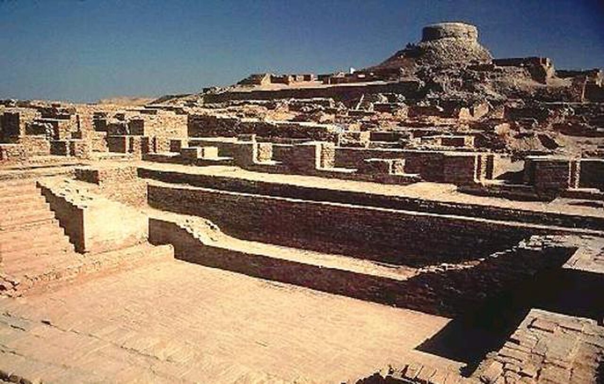
Ritual bathing, Ayurveda and yoga.
Qi, acupuncture, herbal medicine, hot springs.
Massage and temple healing, from Buddhist monks.
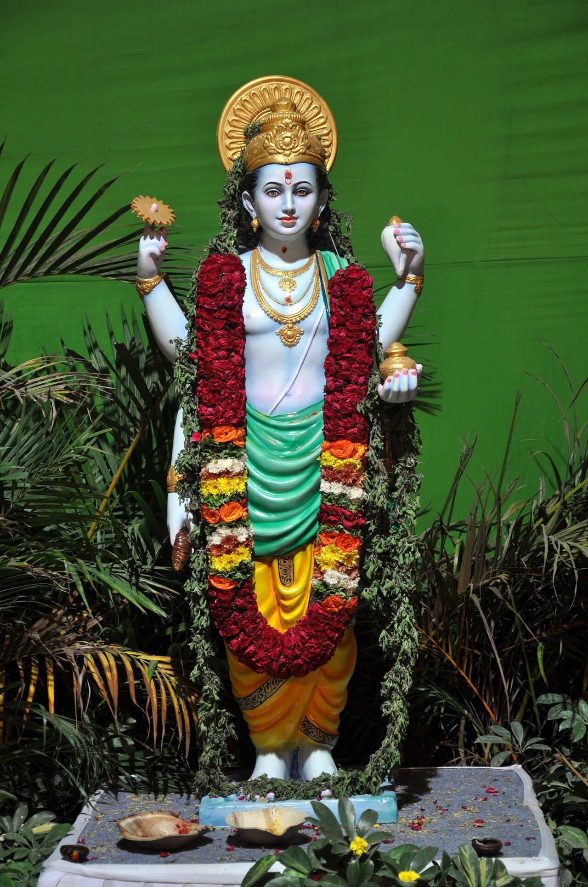
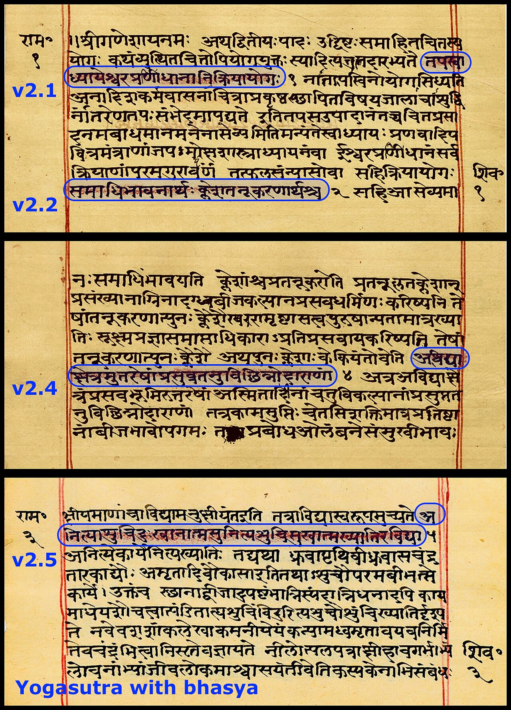
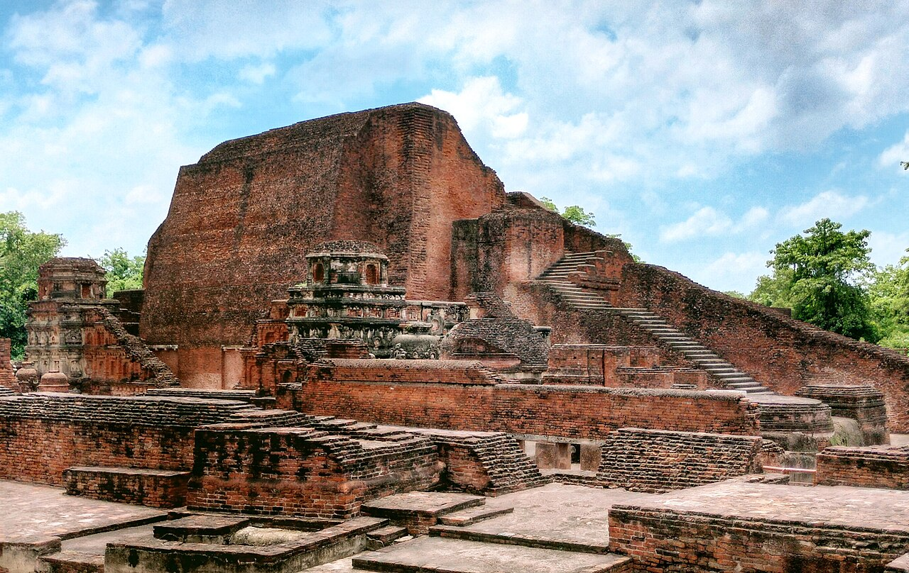
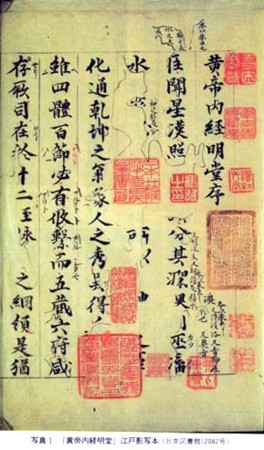
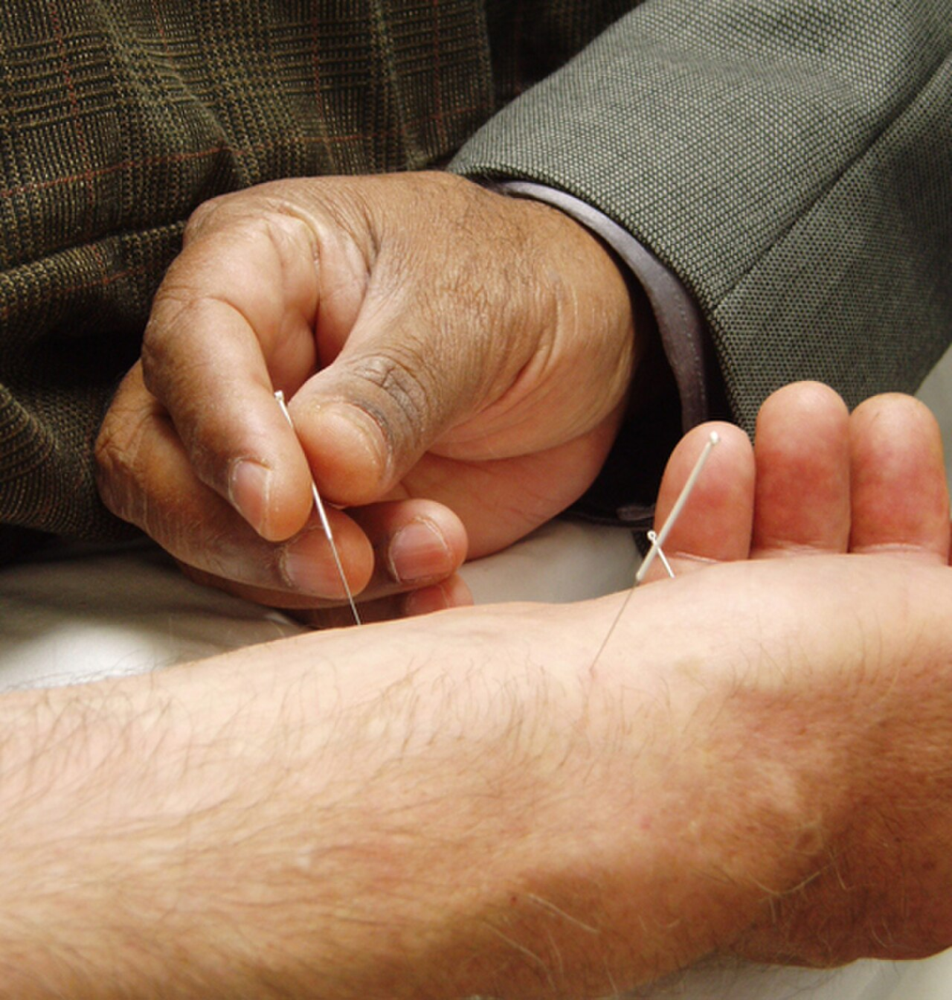
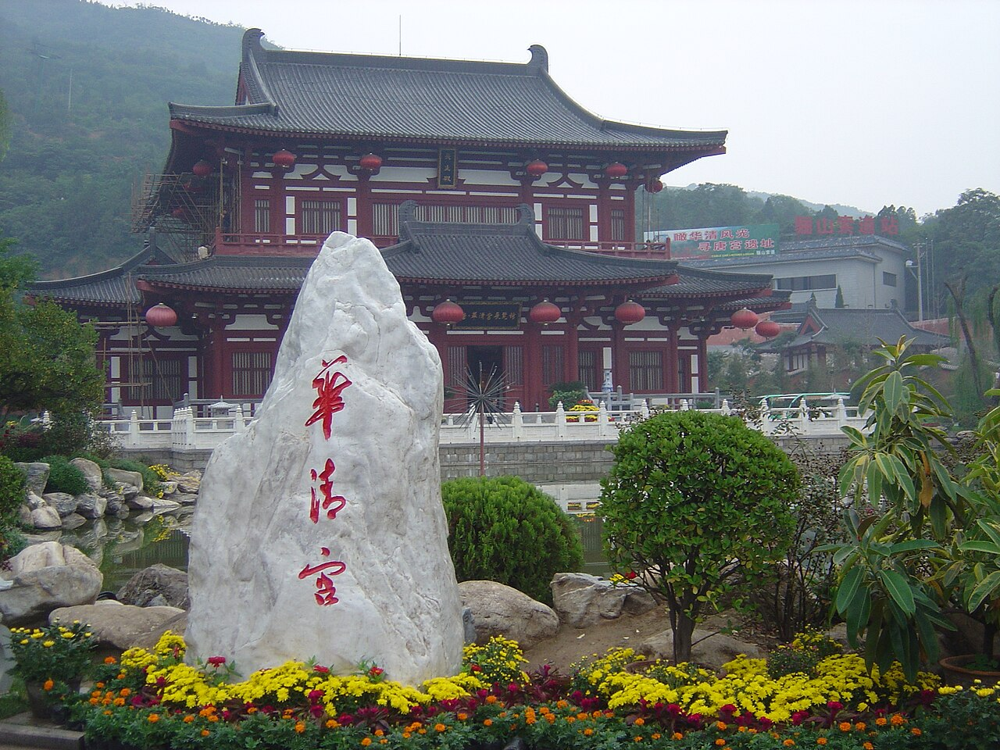
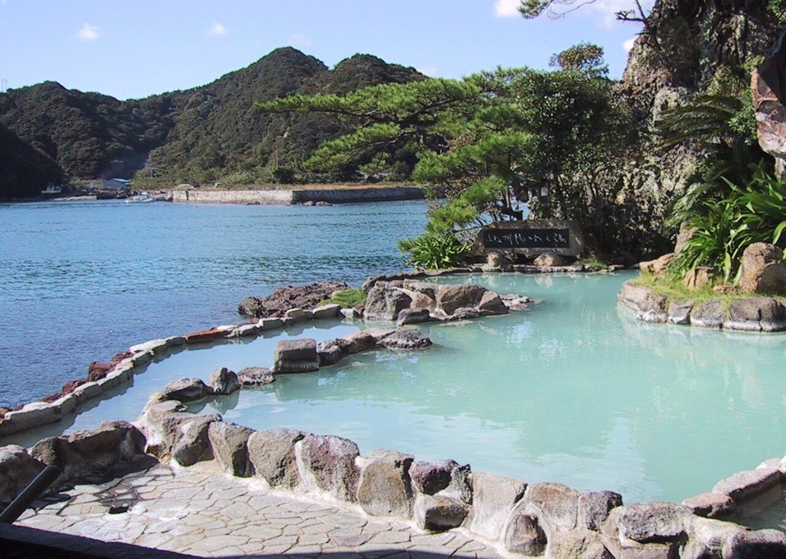
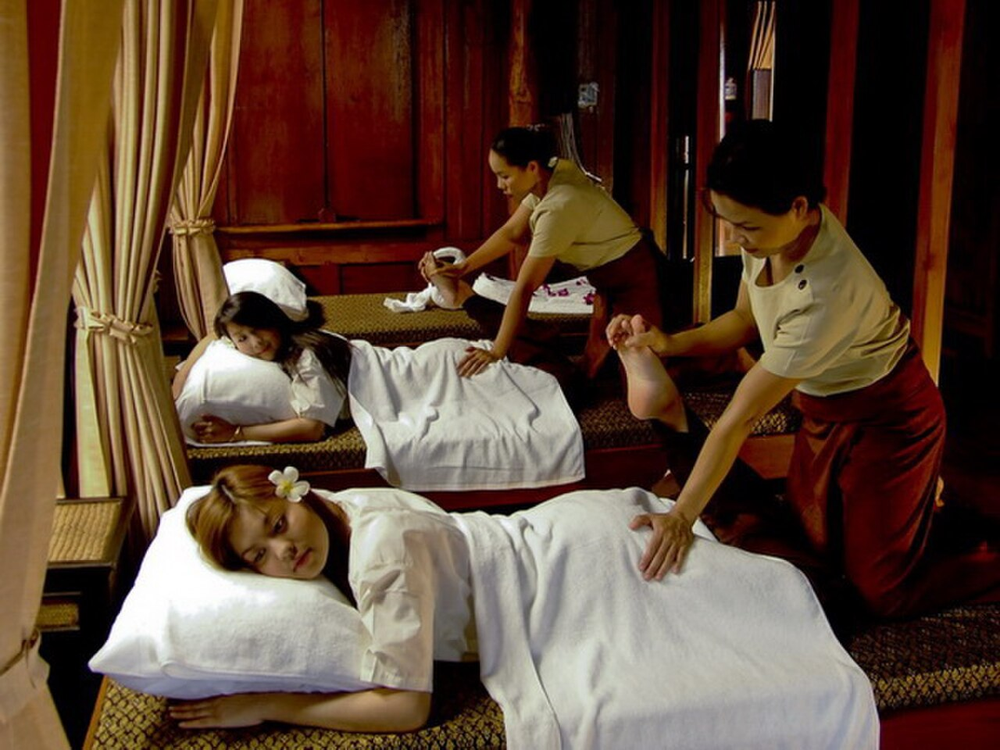
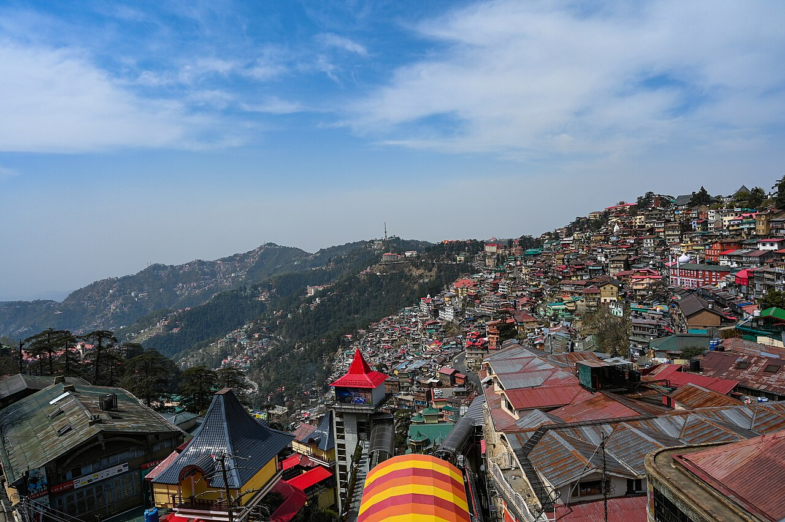
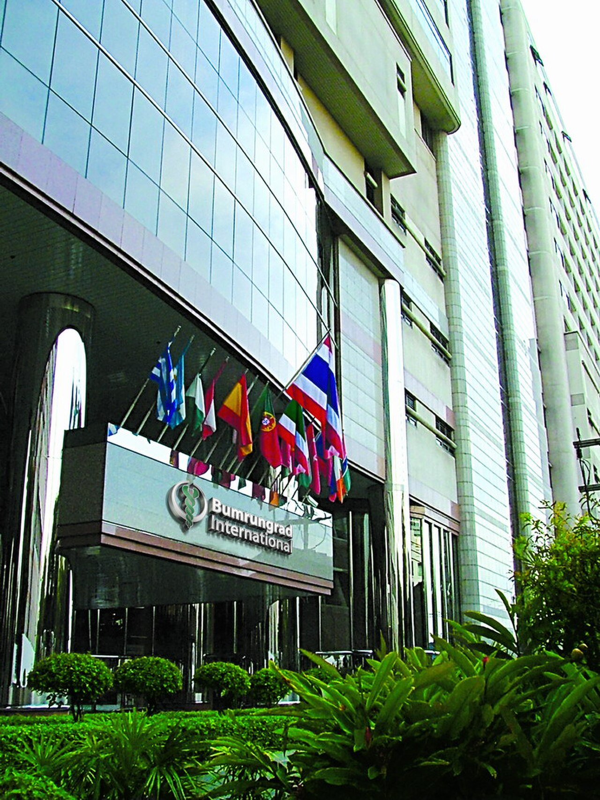
wellness trips in Asia-Pacific in 2024. It overtook Europe as the largest region (Global Wellness Institute).
wellness tourism spending in Asia-Pacific, 2024 (about +31% on 2023).
often cheaper than the USA for surgery in Thailand, India and Malaysia, in JCI-accredited hospitals (Bumrungrad since 2002).
Ayurveda, TCM and onsen are still practised after thousands of years, not rebuilt from ruins.
Body, mind and spirit treated as one: prevention, not only cure.
Healing grew inside temples and monasteries: Hindu, Buddhist, Taoist, Shinto.
Traditional healing next to high-tech hospitals at low cost, with famous hospitality.
Started c. 2500 BCE in the Indus Valley · grew through religion and philosophy · became the world's medical and wellness hub.